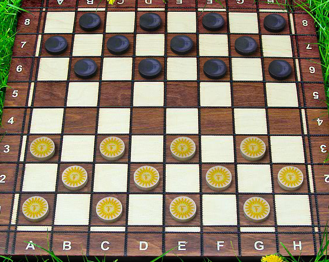
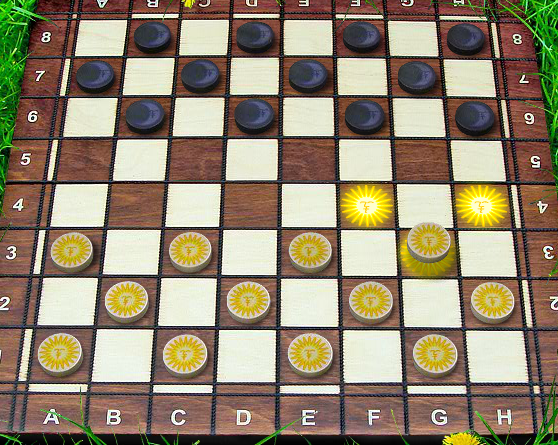
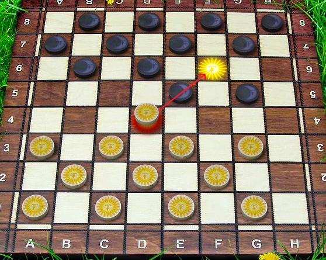
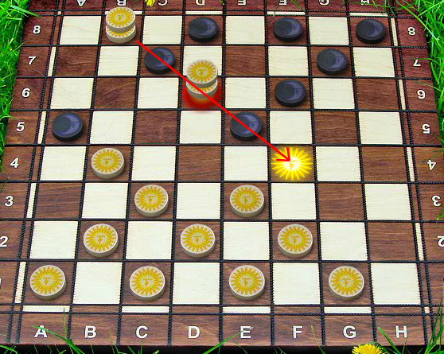

Классические шашки
Состав игры:
Игровая доска 64 (8х8) клетки. Клетки двух контрастных цветов, располагающихся по диагоналям.
Обозначение игровых клеток буквенно-цифровое (как на шахматной доске).
Шашки двух разных цветов по 12 штук.
Общее количество фигур в игре – 24.
Для расстановки шашек в классическом варианте используются только темные поля.
Цель игры:
Выиграть партию - когда у соперника не осталось ни одной шашки, шашки соперника заблокированы или соперник досрочно признал свое поражение.
При невозможности выигрыша любого из участников игры, партия считается законченной в ничью.

Правила:
Первый ход всегда принадлежит игроку с белыми фишками.
Ходы делаются по диагонали (только на темные клетки поля). Движение фишек осуществляется вперед.

В классической игре бить фишки противника можно только движением вперед по диагонали.
Есть более сложные виды шашек, где сбить фигуру можно как ходом вперед, так и назад.

Если шашка бьет фигуру соперника, то она становится на клетку за ней.
Сбитая фишка снимается с поля и выходит из игры. Выставлять обратно шашки на поле не разрешается.
Если фишка находится под боем, бить ее нужно обязательно.
Когда присутствует несколько вариантов боя, игрок выбирает ход по своему усмотрению.
Побеждает игрок, который сбил все фишки противника или смог заблокировать все доступные ему ходы.
Как ходит дамка в шашках:
Фигура, которая дошла до противоположного края шашечной доски, называется «дамка».
Иногда в шашках её также называют «королевой».
Ее переворачивают обратной стороной или отмечают другим образом: такая фишка может перемещаться вперед и назад на любое количество ходов.

Дамка может совершать ходы в различных направлениях: по диагонали, прямо или назад.
Количество таких фишек не ограничивается, может достигать 12 штук (все шашки игрока) в случае, если игроку удалось сохранить их все и довести до противоположной части поля.
Ничья в партии шашек:
В шашках по правилам может быть официально зафиксирована ничья.
Она объявляется, если оба игрока не могут выиграть, а состязание зашло в логический тупик.
Ничья признается и в случае, если последние 15 ходов были сделаны дамками без передвижения простых шашек и взятия фишек противника.
В некоторых видах шашек допускается ничья по соглашению сторон.